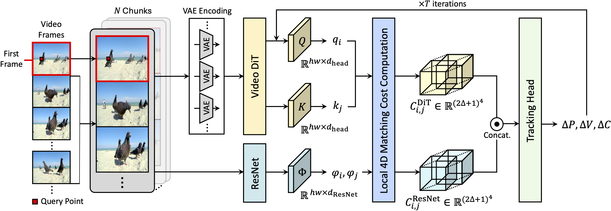

arXiv 2025
Despite achieving strong results on standard benchmarks, current point tracking methods rely on feature backbones that are rarely designed with the temporal coherence needed for robust real-world performance. While recent works incorporate powerful visual foundation model (VFM) features into tracking pipelines, no prior work has systematically analyzed which VFM provides the most robust representations for point tracking. We present the first such analysis, evaluating diverse VFMs in a zero-shot setting on both standard and robustness benchmarks for point tracking. Our study reveals that video Diffusion Transformers (DiTs) consistently yield the most temporally coherent and discriminative features, even surpassing ResNet backbones explicitly supervised on tracking data. We hypothesize this advantage stems from large-scale video pretraining, full 3D spatio-temporal attention, and a diffusion training objective. Motivated by this finding, we propose DiTracker, which integrates video DiT features into existing tracking frameworks through query-key matching cost computation, cost-level fusion with a lightweight ResNet branch, and LoRA adaptation. Under the same tracking head, DiTracker is trained solely on synthetic data with far fewer iterations, yet outperforms CoTracker3 trained with additional real-world videos, with the largest gains under challenging and corrupted scenarios. It further generalizes across tracking heads and scales with backbone size, confirming that generative video pretraining provides real-world priors that reduce the dependence on large-scale real-data supervision.
We present the first systematic analysis of visual foundation models (VFMs) for point tracking, evaluating their zero-shot matching ability across pretraining modalities (image or video), architectures (UNet or Transformer), and learning objectives (MAE or diffusion), under both standard and challenging tracking scenarios. We compare image and video diffusion transformers (DiTs) against self-supervised image and video models, and against ResNet backbones taken from point-tracking models trained with task-specific supervision.
| Method | TAP-Vid-DAVIS | ITTO-MOSE | |||||||||
|---|---|---|---|---|---|---|---|---|---|---|---|
| Original | Motion Blur | Avg. | Motion Dynamics | Reappearance Freq. | |||||||
| 1 | 3 | 5 | Static | Moderate | Fast | None | Occas. | Freq. | |||
| CoTracker3 | 35.6 | 35.0 | 30.1 | 24.6 | 23.7 | 33.3 | 24.2 | 14.9 | 32.7 | 24.1 | 14.6 |
| TAP-Net | 41.8 | 41.0 | 40.3 | 38.5 | 32.0 | 42.0 | 33.2 | 22.5 | 43.5 | 31.5 | 21.5 |
| TAPIR | 44.3 | 42.7 | 41.8 | 40.1 | 32.5 | 42.4 | 34.5 | 22.1 | 43.0 | 32.9 | 21.8 |
| BootsTAPIR | 48.3 | 43.6 | 41.5 | 39.0 | 34.9 | 44.9 | 38.4 | 23.6 | 46.2 | 35.2 | 23.7 |
| VGGT | 44.7 | 42.9 | 39.6 | 28.6 | 29.6 | 36.2 | 31.0 | 22.7 | 37.5 | 29.7 | 21.9 |
| DINOv2-B/14 | 40.5 | 39.2 | 34.4 | 29.5 | 22.6 | 25.0 | 23.8 | 19.1 | 24.3 | 24.3 | 19.4 |
| DINOv3-B/16 | 41.3 | 40.6 | 37.5 | 32.2 | 24.9 | 30.8 | 24.3 | 20.3 | 29.0 | 26.3 | 19.6 |
| DINOv3-7B/16 | 42.6 | 42.2 | 40.9 | 38.1 | 26.0 | 30.2 | 25.5 | 22.3 | 28.0 | 26.7 | 23.6 |
| SD3 | 38.9 | 32.5 | 26.3 | 20.7 | 24.6 | 36.6 | 24.2 | 14.3 | 33.3 | 24.3 | 16.3 |
| SVD | 37.8 | 36.6 | 33.2 | 28.8 | 24.9 | 35.1 | 26.2 | 15.0 | 33.7 | 24.9 | 16.4 |
| V-JEPA2-G/16 | 40.1 | 39.5 | 36.3 | 29.5 | 25.4 | 31.7 | 26.7 | 18.9 | 31.4 | 26.3 | 18.8 |
| HunyuanVideo | 45.3 | 43.4 | 40.9 | 36.4 | 29.7 | 44.6 | 30.1 | 16.6 | 41.5 | 28.7 | 19.3 |
| WAN-1.3B | 43.0 | 41.3 | 34.7 | 27.5 | 25.8 | 37.5 | 27.2 | 14.7 | 36.8 | 25.0 | 15.8 |
| WAN-14B | 46.6 | 45.1 | 41.4 | 37.1 | 32.2 | 42.1 | 34.5 | 22.2 | 41.7 | 32.3 | 23.0 |
| CogVideoX-2B | 48.2 | 46.9 | 42.8 | 36.8 | 32.0 | 47.1 | 33.2 | 18.2 | 43.9 | 31.3 | 21.2 |
| CogVideoX-5B | 49.7 | 48.6 | 45.2 | 39.5 | 36.1 | 48.0 | 39.3 | 23.3 | 47.5 | 36.0 | 25.0 |
Zero-shot comparison of VFMs and point-tracking feature backbones on TAP-Vid-DAVIS (clean and ImageNet-C motion blur) and ITTO-MOSE, at the same feature resolution. Gray rows are feature backbones taken from models trained with task-specific supervision. Video DiTs consistently provide the strongest zero-shot matching, with CogVideoX-5B best overall.
Video DiTs provide the most robust feature representations for point tracking among VFMs, even surpassing ResNet backbones explicitly supervised on tracking data.
Within the same model family, larger models consistently yield better tracking performance, with larger gains on challenging scenes.

DiTracker turns a generative video DiT into a tracking backbone through three components. For long videos, frames are split into \( N \) temporal chunks with the global first frame prepended, encoded by a VAE, and processed by the video DiT to extract query features \( q_i \) and key features \( k_j \). (1) Query-key matching cost. We reuse the model's internal 3D attention to form the matching cost directly from its query and key projections, rather than learning a new one. (2) Cost fusion. The DiT matching cost is fused at the cost level with a higher-resolution ResNet cost to recover the fine spatial detail the low-resolution DiT features lack. (3) LoRA training. We adapt the frozen video DiT with lightweight LoRA so its generative features transfer to tracking. A tracking head then refines trajectories over \( T \) iterations, updating displacement \( \Delta P \), visibility \( \Delta V \), and confidence \( \Delta C \).
The benefit of video DiT features is not tied to a single setup. Scaling the backbone (CoTracker3 head): a larger WAN-14B backbone consistently beats WAN-1.3B across ITTO-MOSE, TAP-Vid-DAVIS, and corrupted DAVIS. Switching the head (WAN-1.3B backbone): replacing the ConvNeXt backbone of the recent AllTracker with our video DiT backbone, trained only on Kubric, improves over AllTracker-Kub on every benchmark and matches or surpasses the fully trained AllTracker on most metrics.
| Method | ITTO-MOSE | TAP-Vid-DAVIS | Corr. DAVIS Avg. |
||||
|---|---|---|---|---|---|---|---|
| AJ↑ | <δxavg↑ | OA↑ | AJ↑ | <δxavg↑ | OA↑ | ||
| Backbone scale (CoTracker3 head) | |||||||
| DiTracker (WAN-1.3B) | 37.4 | 52.9 | 74.6 | 52.7 | 70.1 | 74.7 | 62.9 |
| DiTracker (WAN-14B) | 39.9 | 54.0 | 77.0 | 57.0 | 72.0 | 79.4 | 64.7 |
| Tracking head (WAN-1.3B backbone) | |||||||
| AllTracker-Kub | 43.7 | 57.7 | 80.5 | 61.8 | 75.3 | 87.8 | 65.7 |
| AllTracker | 44.4 | 59.2 | 80.5 | 63.3 | 76.3 | 90.1 | 70.7 |
| DiTracker (AllTracker) | 44.6 | 58.8 | 80.2 | 64.4 | 77.9 | 89.1 | 71.4 |
Generalization across tracking heads and scalability with backbone size. “Corr. DAVIS” is δxavg on TAP-Vid-DAVIS averaged over all ImageNet-C corruptions at severity 2.
@misc{son2025repurposingvideodiffusiontransformers,
title={Probing and Leveraging Video Diffusion Transformer Features for Robust Point Tracking},
author={Soowon Son and Honggyu An and Jisu Nam and Hyunah Ko and Chaehyun Kim and Dahyun Chung and Jung Yi and Siyoon Jin and Junhwa Hur and Seungryong Kim},
year={2025},
eprint={2512.20606},
archivePrefix={arXiv},
primaryClass={cs.CV},
url={https://arxiv.org/abs/2512.20606},
}